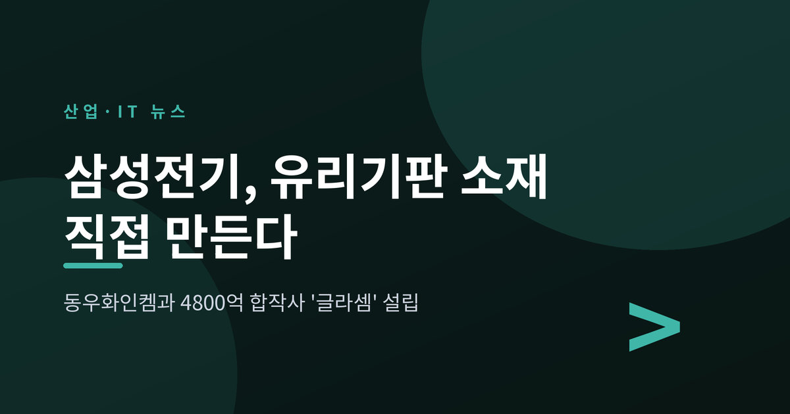
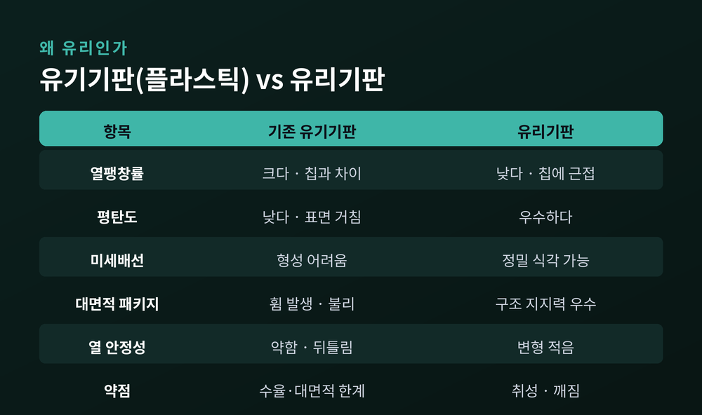
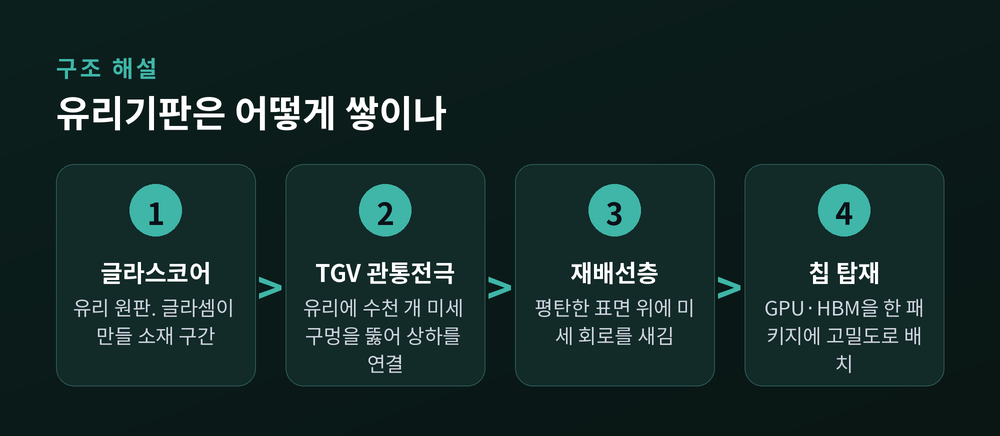
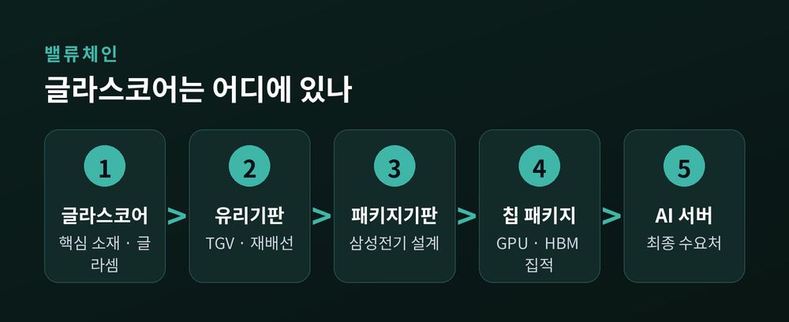
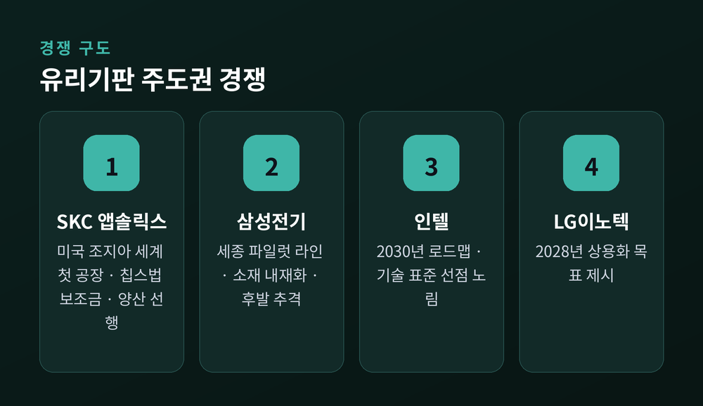
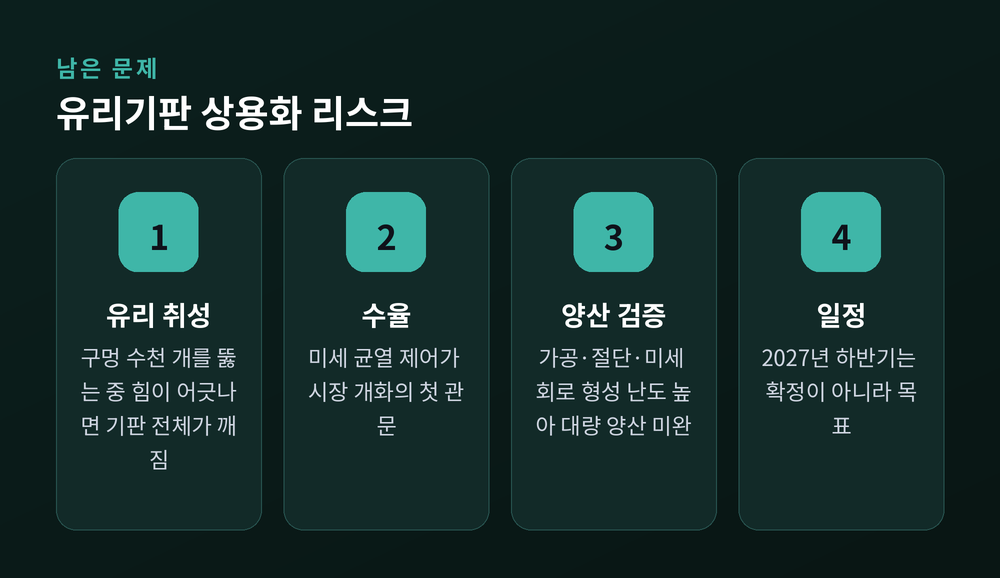
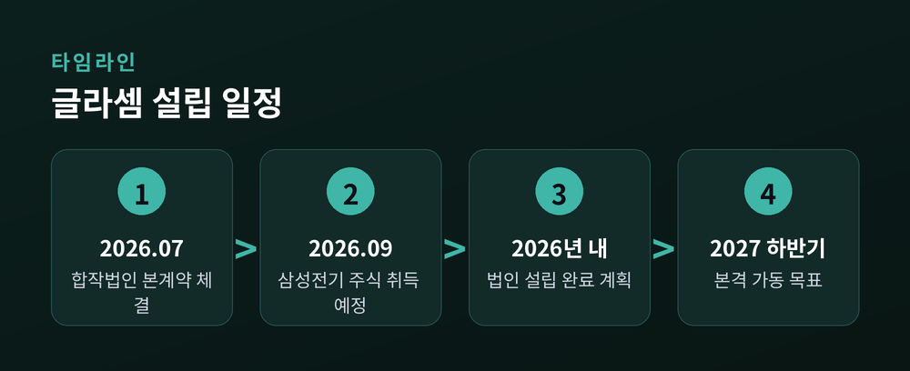

2026-07-16

이번 글에서는 삼성전기가 일본 동우화인켐과 손잡고 세운 유리기판 소재 합작법인 '글라셈'을 정리해 보겠습니다. 숫자가 두 개 나와 헷갈리기 쉬운 사안이라, 무엇이 무엇을 가리키는지부터 짚겠습니다. 기술 이야기도 함께 풀어 보겠습니다.
2026년 7월 2일이었습니다.
삼성전기가 동우화인켐과 합작법인 설립 본계약을 체결했다고 밝혔습니다. 동우화인켐은 일본 스미토모화학그룹이 지분 100%를 가진 자회사입니다. 만들 것은 반도체 유리기판의 핵심 소재인 '글라스코어(Glass Core)'입니다.
주목할 점은 이것이 양해각서(MOU)가 아니라는 사실입니다. 본계약입니다. 전자신문·ZDNet·뉴스핌이 모두 같은 표현으로 전했습니다.
합작법인의 이름은 '글라셈(GlaSSEM)'입니다. 아직 가칭입니다. 이름을 뜯어보면 이번 협력의 성격이 그대로 드러납니다. Glass(유리), Samsung(삼성), Sumitomo(스미토모), Electronic(전자), Materials(재료)의 앞 글자를 모았습니다. 한국의 기판 회사와 일본의 소재 회사가 이름 안에 나란히 들어간 셈입니다.
보도에 두 개의 금액이 등장합니다. 섞어 쓰면 안 됩니다.
4,800억원은 양사를 합친 총 출자 규모입니다. 3,191억원은 삼성전기 혼자 넣는 돈입니다. 삼성전기는 글라셈 주식 6,382만 주를 3,191억원에 취득한다고 공시했습니다. 취득 예정일은 2026년 9월 1일입니다.
지분율과 맞춰 보면 계산이 맞습니다. 삼성전기 66%, 동우화인켐 34%입니다. 4,800억원의 66%는 약 3,168억원이니, 공시된 3,191억원과 거의 같습니다.
경영권은 삼성전기가 쥡니다.
본사와 생산거점은 경기도 평택에 있는 동우화인켐 평택사업장 안에 마련됩니다. 새 부지를 찾는 대신 파트너의 기존 공장 안으로 들어가는 방식입니다. 시간을 아끼겠다는 뜻으로 읽힙니다.
일정은 두 단계로 나뉩니다. 먼저 연내에 법인 설립을 마칩니다. 이후 생산 설비 구축, 공정 안정화, 품질 검증을 차례로 거쳐 2027년 하반기 본격 가동을 목표로 합니다.
일부 기사 제목의 "내년 하반기"는 2027년 하반기를 뜻합니다. 작성 시점이 2026년이기 때문입니다. 같은 이야기입니다.
왜 갑자기 기판이 화제가 되었을까요.
반도체 기판은 칩과 메인보드를 전기적으로 이어 주고, 신호와 전력을 나르는 부품입니다. 오랫동안 조연이었습니다.
예전엔 플라스틱 계열의 유기기판으로 충분했습니다. 지금은 아닙니다.
생성형 AI가 퍼지면서 GPU와 HBM, CPU를 하나의 패키지 안에 빽빽하게 몰아넣는 수요가 늘었습니다. 패키지는 커지고, 회로는 더 가늘어져야 합니다. 집적도와 전력 사용량이 함께 올라갔습니다. 그러자 받침대가 버티지 못하기 시작했습니다.
뉴스핌은 이 흐름을 "AI 반도체 성능 경쟁이 패키징 영역으로 확장되면서 기판 업체의 역할이 커지고 있다"고 정리했습니다.
기존 유기기판의 약점은 분명합니다. 표면이 거칠고, 열팽창이 큽니다. 열에 약하고 평탄도가 낮습니다. 본딩·압축 공정과 늘어난 입출력(I/O)에서 나오는 열은 기판을 휘게 만듭니다. 이 '휨' 현상은 수율을 떨어뜨리고 대면적화를 가로막습니다. 평탄도가 낮으니 미세한 회로 패턴을 새기기도 어렵습니다.
정리하면 이렇습니다. 패키지가 커질수록 유기기판은 휘고, 뒤틀리고, 가는 회로를 받아내지 못합니다.

삼성전기가 공식 발표에서 든 유리기판의 장점은 두 가지로 압축됩니다.
열팽창률이 낮다. 평탄도가 우수하다.
그래서 대면적·고집적 반도체 패키지를 만들기에 유리하다는 것입니다. 전자신문과 ZDNet, 뉴스핌이 같은 구조로 전했습니다.
조금 더 풀어 보겠습니다.
평탄도가 왜 중요할까요. 회로를 새기는 포토리소그래피 공정은 초점을 맞춰야 합니다. 바닥이 울퉁불퉁하면 초점이 흔들립니다. 유리는 평탄해서 초점 심도가 좋아지고, 그만큼 정밀한 식각이 가능해집니다. 미세배선이 여기서 갈립니다.
열팽창은 또 다른 문제입니다. 소재마다 열을 받으면 늘어나는 정도가 다릅니다. 칩과 기판이 서로 다른 속도로 늘어나면 접합부가 뒤틀리고, 심하면 끊어집니다. 유리의 열팽창계수는 실리콘 칩에 더 가깝습니다. 변형이 줄고, 신뢰성이 올라갑니다.
업계가 유리기판을 차세대 패키지의 '게임 체인저'라 부르는 배경입니다. "유기기판의 열수축과 휨을 극복할 유일한 대안"이라는 평가까지 나옵니다.

이번 뉴스에서 가장 중요한 대목입니다.
오해하기 쉽습니다. 삼성전기가 유리기판을 만든다는 이야기가 아닙니다. 유리기판의 재료를 직접 쥔다는 이야기입니다.
글라스코어는 유리기판의 바탕이 되는 핵심 소재입니다. 완성된 기판이 아니라, 그 기판을 깎아 만들 원판에 가깝습니다.
순서로 보면 이렇습니다. 글라스코어라는 소재가 있고, 여기에 구멍을 뚫고 회로를 입혀 유리기판이 됩니다. 그 기판 위에 칩이 올라가 패키지가 되고, 그 패키지가 AI 서버로 들어갑니다.
삼성전기는 원래 기판의 설계와 제조를 맡는 자리에 있었습니다. 이번에 그 앞단까지 손을 뻗은 것입니다. 뉴스핌은 이를 "설계·제조·소재로 이어지는 밸류체인 구축", "공급망 내재화"로 요약했습니다.
왜 소재까지 가져갈까요. 이유는 단순합니다. 소재 품질이 기판의 수율과 성능, 신뢰성을 직접 좌우하기 때문입니다. 남의 재료로는 수율을 통제할 수 없습니다.
역할 분담도 뚜렷합니다. 삼성전기는 기판 설계·제조 역량을 냅니다. 스미토모화학은 소재 기술력을 댑니다. 동우화인켐은 생산 인프라와 운영 노하우를 얹습니다.
장덕현 삼성전기 사장은 이번 결정을 "글라스 코어의 핵심 경쟁력을 선제적으로 확보하기 위한 전략적 선택"이라 표현했습니다(전자신문). 이와타 케이이치 스미토모화학그룹 회장은 "장기 파트너십을 이어가겠다"고 했습니다(ZDNet).

냉정하게 볼 필요가 있습니다.
이 판에서 앞서 있는 쪽은 SKC입니다. SKC의 자회사 앱솔릭스는 미국 조지아주에 세계 최초의 반도체 유리기판 공장을 세웠습니다. 미국 반도체법 보조금 7,500만 달러도 받았습니다. 인텔보다 빠른 2026년 내 양산을 준비하며 글로벌 팹리스들과 시제품 테스트를 진행 중입니다.
뉴스핌도 "국내에서는 SKC 자회사 앱솔릭스가 유리기판 사업을 선제적으로 추진하고 있다"고 적었습니다.
인텔은 다른 길을 갑니다. 유리기판을 차세대 반도체의 필수 단계로 규정하고 2030년 로드맵을 내걸었습니다. 2030년까지 패키지에 트랜지스터 1조 개를 담겠다는 목표입니다. 한 매체는 이 구도를 "인텔은 기술 표준, 삼성전기는 고객 확보"로 정리했습니다.
삼성전기는 후발주자로 분류됩니다. 다만 실행 속도가 빠릅니다. 세종사업장에 파일럿 라인을 먼저 구축했고, AMD·엔비디아 등과 시제품 성능 검증을 진행 중입니다. 여기에 이번 소재 내재화를 얹어 차별화를 시도하는 중입니다.
LG이노텍은 CES 2026에서 2028년 상용화 목표를 제시했습니다. 국내 구도는 SKC·삼성전기·LG이노텍의 3파전으로 정리되는 분위기입니다.
수요처도 움직입니다. AMD는 2028년 HPC용 반도체에 유리기판을 적용할 계획입니다.

기대만 적으면 균형이 맞지 않습니다.
가장 큰 걸림돌은 유리 그 자체입니다. 취성, 곧 깨지기 쉬운 성질입니다.
유리기판을 만들려면 유리에 수십~수백 마이크로미터짜리 구멍을 수천 개 뚫어야 합니다. TGV(유리관통전극)라고 부릅니다. 이 공정에서 힘이 조금만 어긋나도 기판 전체가 깨집니다. 디일렉이 전한 업계 설명입니다.
그래서 수율이 최대 난제로 꼽힙니다. 미세 균열(마이크로 크랙)을 제어하는 일이 시장 개화의 첫 관문이라는 평가가 나옵니다. 상용화 허들의 핵심은 결국 "유리 가공"이라는 이야기입니다.
양산 검증도 끝나지 않았습니다. 뉴스핌은 "유리기판 시장이 단기간에 대량 양산 단계로 넘어가기는 쉽지 않다"고 전했습니다. 가공과 절단, 미세 회로 형성 모두 난도가 높기 때문입니다.
일정도 확정이 아닙니다. 2027년 하반기는 목표입니다. 게다가 그때 가동되는 것은 글라스코어라는 소재 생산입니다. 최종 유리기판 제품의 양산과 고객사 채택은 그다음 이야기입니다.
뉴스핌의 진단이 정확해 보입니다. "관건은 실제 양산 시점과 고객사 확보 여부"이며, 공정 안정화와 원가 경쟁력, 신뢰성 검증을 모두 통과해야 한다는 것입니다.
기판 업황 자체도 마냥 좋지는 않습니다. 하반기 납품 단가 인하 압박 우려가 이미 보도된 바 있습니다.

시장이 열리는 시점은 대체로 2027~2028년으로 모입니다. 2028년 AI 서버에 본격 적용되고, 2030년쯤 기술이 무르익는다는 그림입니다.
시장 규모 전망은 소스마다 크게 엇갈립니다. 2026년 88억 7,000만 달러라는 추정이 있는가 하면, 2035년 42억 달러(약 6조원)라는 추정도 있습니다. '유리기판'을 어디까지로 보느냐가 달라 생긴 차이로 보입니다. 숫자 하나를 못 박기보다, 아직 크기를 재는 중이라고 보는 편이 정확하겠습니다.
확실한 것은 시간표입니다. 뉴스핌의 표현대로, 앞으로 1~2년이 기술 검증과 공급망 구축의 성패를 가릅니다.
※ 이 글은 정보 전달을 위한 뉴스 해설이며, 특정 종목에 대한 투자 권유가 아닙니다. 언급된 기업과 수치는 보도된 사실을 정리한 것으로, 투자 판단과 그 결과에 대한 책임은 투자자 본인에게 있습니다.

정리하면 이렇습니다.
삼성전기는 유리기판을 만들겠다고 선언한 것이 아닙니다. 그 유리기판을 만들 재료를 남에게 맡기지 않겠다고 결정한 것입니다. 4,800억원은 그 결정의 가격표입니다.
받침대를 바꾸는 일이 이제 반도체의 승부처가 되었습니다.
다만 유리는 여전히 깨집니다. 발표는 계약서 한 장으로 끝나지만, 검증은 2027년까지 이어집니다. 그때 무엇이 남았는지 다시 보겠습니다.